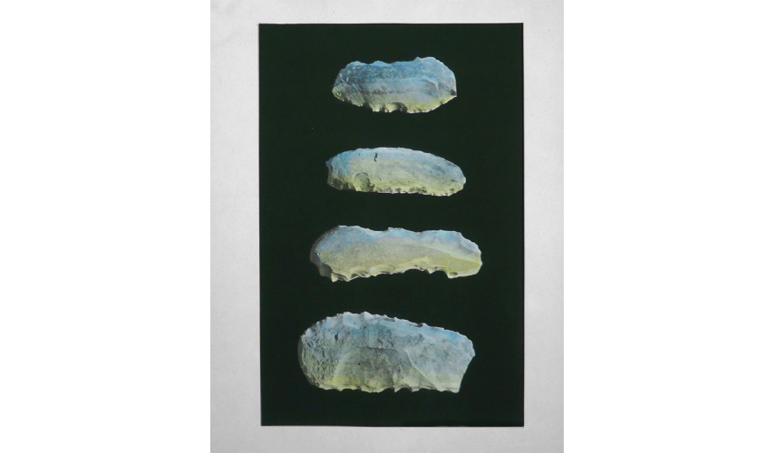

This project presents a series of images from the document "Prehistoric Collection," from the National Museum of Bardo, Museum of Ethnography and Prehistory of Algeria. This document, stolen in 1968, was purchased on eBay by the artist. The flints are painted with watercolor. This transformation recalls the Celtic imagination and its belief in the magical power of stones. "The colored flints are mental images, simultaneously stones from the future and the past. They are a synchrony of different temporalities, the negation of time, in this sense they can be Philosopher Stones."
